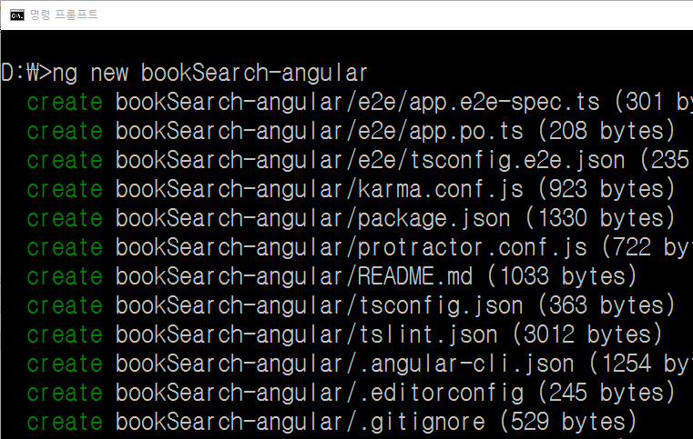
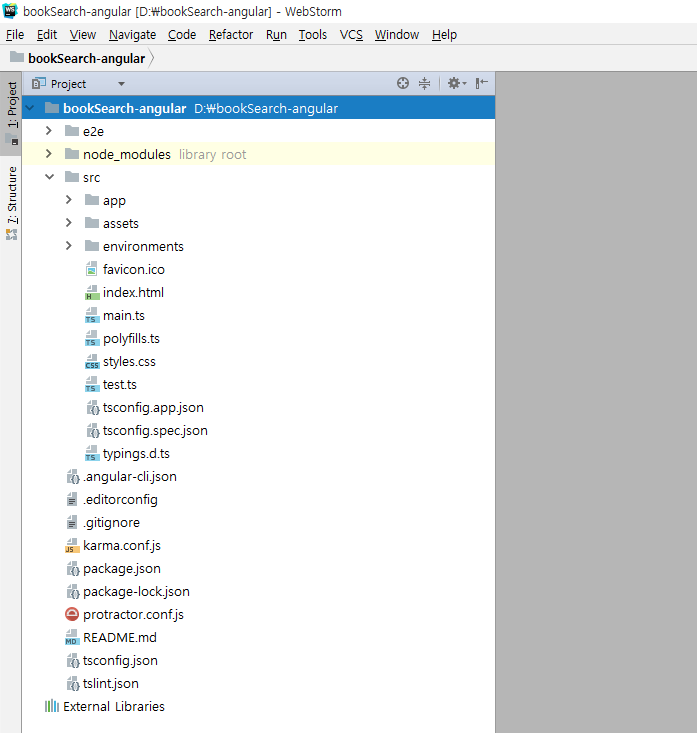

Angular 강좌(2) - 개발환경세팅
Angular 강좌는 여러 절로 구성되어 있습니다.
- Angular 강좌(1) - Introduction
- Angular 강좌(2) - 개발환경세팅
- Angular 강좌(3) - Component
- Angular 강좌(4) - Angular Material
- Angular 강좌(5) - 실습(1)
Angular 개발환경 - Node.js, WebStorm, TypeScript
이번 포스트에서는 Angualr의 개발환경을 세팅하고 Angular CLI를 이용하여 기본적인 Hello World App을
생성, 실행하는 것까지 진행하도록 하겠습니다.
제일 먼저 해야 할 일은 Node.js를 설치하는 것입니다. Angular CLI와 TypeScript가 node module로 존재하기 때문에
npm을 이용하여 이 두가지를 설치해야 합니다.
먼저 Node.js사이트에 접속해 LTS 버전이나 최신버전 둘 중 하나를 선택해
다운로드 합니다. (어떤것을 설치해도 상관없습니다.)

저는 LTS 버전으로 다운로드 했습니다. 다운로드가 끝나면 기본 형태로 설치를 진행합니다. 설치가 끝나면
C:/Program Files/nodejs 폴더가 만들어지게 됩니다.
이제 command 창을 열어서 다음과 같이 명령어를 실행해봅니다.
npm

npm(Node Package Manager)이 정상적으로 동작하면 이제 npm을 이용해 typescript를 설치할 수 있습니다.
설치는 local mode와 global mode로 설치가 가능합니다. 여기서는 편의상 global mode로 설치합니다.
(일반적으로는 local mode를 선호합니다.)
command 창에서 다음과 같이 명령어를 이용해 typescript를 global로 설치합니다.
npm install -g typescript

typescript 2.6.2가 설치되었습니다.
global mode로 설치하면 windows 시스템을 기준으로
$USER_HOME/AppData/Roaming/npm/node_modules에 설치됩니다.
이제 사용할 IDE(Integrated Development Environment)를 설치합니다. 여기서는 WebStorm(유료)을 이용합니다.
Visual Studio Code(무료)를 사용하셔도 됩니다. WebStorm은 유료이지만 30일 trial을 사용할 수 있고 Student license로
1년간 무료로 사용할 수 도 있습니다.
JetBrains사이트로 접속한 후 WebStorm을 다운로드 받습니다.
다운로드가 완료되면 기본형태로 설치합니다. 설치가 끝나면 프로젝트를 생성할 수 있는 화면이 나오게 되는데 일단 이 화면에서 대기합니다. 프로젝트는 Angular CLI를 이용해서 생성합니다.
Angular 개발환경 - Angular CLI
일반적으로 Framework를 도입할 때 가장 힘든점 중 하나는 개발환경 구축입니다. 기본적인
폴더구조를 숙지해서 만들어야 하고 기본적으로 사용되는 설정 파일들도 다수 존재합니다. 대부분 머가먼지 알기 힘들죠.
코드를 작성한 후 Build 설정, Bundler 설정, 테스팅과 배포등 너무 많은 일을 해야하고 설정방법 또한 너무 많고 복잡합니다.
Angular 역시 마찬가지입니다. Mike Brocchi( Angular CLI contributor )의 Twitter 설문을 예로 들어보죠.

Angular는 Angular CLI를 제공함으로 이런 복잡함을 해결하고 있습니다. Angular CLI를 이용할 경우와 그렇지 않는 경우를
간단히 그림으로 표현하면 다음과 같습니다.

Angular Project를 쉽게 생성하고 프로젝트를 시작하기 위한
scaffolding을 포함해서 다양한 기능을 제공하는 것이 바로 Angular CLI입니다. 사실 쓰지 않을 이유가 없습니다.
그럼 Angular CLI를 설치해보도록 하죠. command 창을 열어서 다음과 같이 실행합니다.
npm install -g @angular/cli
npm을 이용하여 Angular CLI를 global로 설치합니다. 설치하는데 시간이 좀 걸립니다. 설치가 끝나면
다음과 같이 입력해서 Angular CLI의 버전을 확인해 보세요.
ng --version

Angular 프로젝트 생성
Angular CLI의 설치가 끝났으니 이제 Angular CLI를 이용하여 프로젝트를 하나 생성합니다. 프로젝트명은
bookSearch-angular로 하겠습니니다. 프로젝트 폴더는 D:/bookSearch-angular로 생성할 것이기 때문에
저는 현재 command창의 working directory를 D:/로 잡아놓고 다음과 같이 입력합니다.
ng new bookSearch-angular

시간이 제법 오래 걸립니다. 필요한 모듈들을 npm을 이용해 다운로드 받기 때문입니다. 프로젝트 생성이 끝나면
자동으로 생성된 설정 파일과 기본 Skeleton 코드가 프로젝트 폴더안에 위치하게 됩니다.
설정파일에 대한 내용은 조금 나중에 다시 보기로 하고 일단 WebStorm으로 해당 프로젝트 폴더를 open합니다. 아래의 그림처럼 WebStorm에서 프로젝트 폴더가 보이게 됩니다.

개발환경 서버를 이용한 Angular 프로젝트 실행
command 창을 열어 프로젝트 root로 working directory를 이동시킨 후 다음의 명령을 실행하면 Webpack을 이용하여 우리 소스를 bundling하고 로컬 웹서버를 이용하여 우리 프로젝트를 서비스하게 됩니다.
ng serve
명령 수행이 끝나면 webpack: Compiled successfully. 메시지가 출력됩니다. 이제 browser를 실행시켜 다음 URL로 접속해 정상적으로 출력되는지 확인하시면 됩니다.
http://localhost:4200

이번 포스트에서는 Angular를 사용하기 위한 위한 개발환경을 구축했습니다. 우리 강좌에서는 Testing과 관련된 사항은 다루지 않을 예정입니다. 이제 만들어진 App을 조금씩 수정하면서 우리의 첫 Angular 프로그램을 완성해 나가면 될 듯 합니다.
예제이기 때문에 따로 설명은 하지 않았지만 Git과 GitHub를 이용해서 코드를 관리하시는게 좋지 않을까
생각됩니다.
End.
Angular 강좌는 아래의 책과 사이트를 참조했습니다. 조금 더 자세한 사항을 알고 싶으시면 해당 사이트를 방문하세요!!
- Angular Official HomePage
- Angular Material Official HomePage
- Build a Mobile App with Angular 2 and Ionic 2
- Angular 첫걸음 - 한빛미디어
- 제대로 배우는 Angular 4 - 비제이퍼블릭